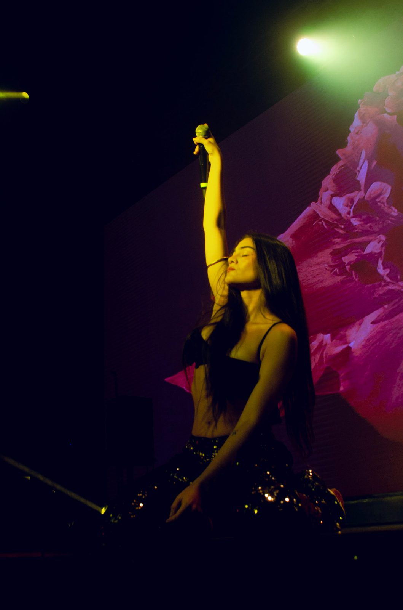
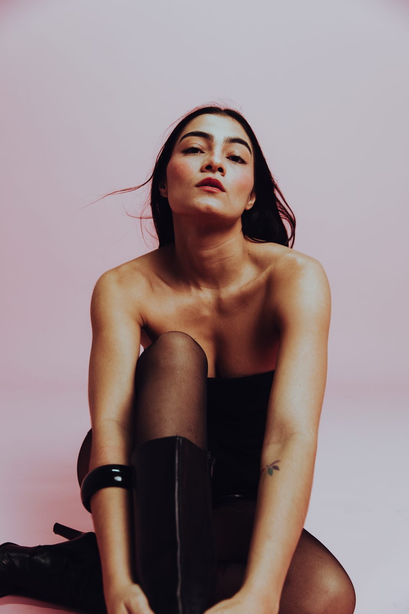
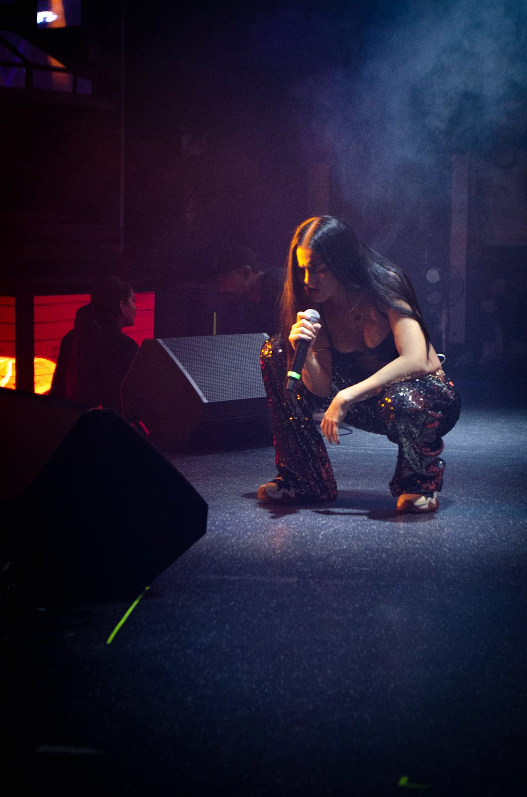

Shonny
Pop con consciencia desde el Caribe. Lo cotidiano también es sagrado.
Colapsar · ya está afueraEl romper de las olas, voces celestiales, murmullos.
Lo que suena

Pendiente · la discografía real y en orden
Más allá de la canción
El universo



Una seda, la tela mojada pegada a la piel, viento entre el cuerpo y la ropa.
El mantra
Un verso para hoy. Cantalo hasta que se te vuelva cierto.
En vivo
Todavía no hay fechas.
Se anuncian primero adentro del Paraíso.
El Paraíso · grupo privado
Quiero que estemos más cerca.
Voice notes, demos, errores. Se enteran primero y me ayudan a decidir. Todo lo lindo, pa' mis aves del paraíso.
Unirme